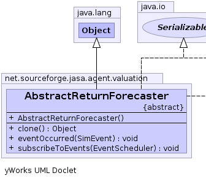
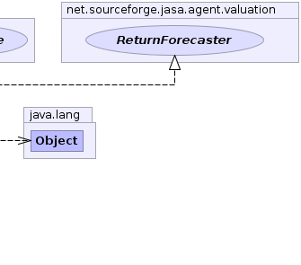

net.sourceforge.jasa.agent.valuation.AbstractReturnForecaster
net.sourceforge.jasa.agent.valuation.AbstractReturnForecaster
|
|||||||||
| PREV CLASS NEXT CLASS | FRAMES NO FRAMES | ||||||||
| SUMMARY: NESTED | FIELD | CONSTR | METHOD | DETAIL: FIELD | CONSTR | METHOD | ||||||||
java.lang.Object
public abstract class AbstractReturnForecaster
|  |  |
| Constructor Summary | |
|---|---|
AbstractReturnForecaster()
|
|
| Method Summary | |
|---|---|
java.lang.Object |
clone()
|
void |
eventOccurred(net.sourceforge.jabm.event.SimEvent event)
|
void |
subscribeToEvents(net.sourceforge.jabm.EventScheduler scheduler)
|
| Methods inherited from class java.lang.Object |
|---|
equals, finalize, getClass, hashCode, notify, notifyAll, toString, wait, wait, wait |
| Methods inherited from interface net.sourceforge.jasa.agent.valuation.ReturnForecaster |
|---|
dispose, getReturnForecast |
| Constructor Detail |
|---|
public AbstractReturnForecaster()
| Method Detail |
|---|
public void subscribeToEvents(net.sourceforge.jabm.EventScheduler scheduler)
subscribeToEvents in interface net.sourceforge.jabm.event.EventSubscriberpublic void eventOccurred(net.sourceforge.jabm.event.SimEvent event)
eventOccurred in interface net.sourceforge.jabm.event.EventListener
public java.lang.Object clone()
throws java.lang.CloneNotSupportedException
clone in interface ReturnForecasterclone in class java.lang.Objectjava.lang.CloneNotSupportedException
|
|||||||||
| PREV CLASS NEXT CLASS | FRAMES NO FRAMES | ||||||||
| SUMMARY: NESTED | FIELD | CONSTR | METHOD | DETAIL: FIELD | CONSTR | METHOD | ||||||||